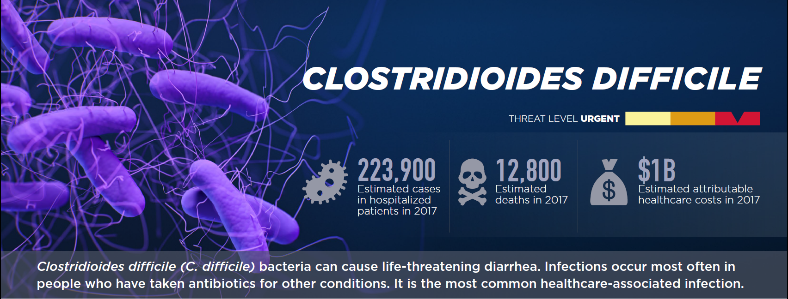
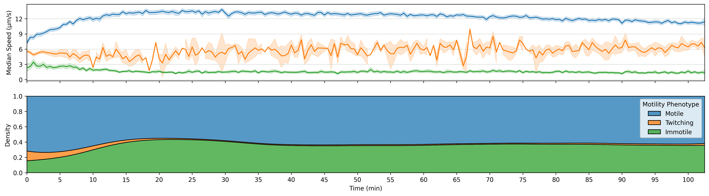

Motility of
Clostridioides difficile
Dr. Julian Schwanbeck
April 6th 2022
Göttingen
Clostridioides difficile
- Formerly Clostridium difficile
- Firmicutes
- Obligate anaerobe
- Spore forming
- Human pathogen
- Nosocomial infection
- Peritrichous flagella

Picture in collaboration with PD Dr. Hoppert
The Pathogen
- Illness is C. difficile infection (CDI)
- Healthy microbiome offers protection against C. difficile
- C. difficile mainly infects the ascending colon
- Toxins lead to cell lysis of epithelial cells
- Spores are found throughout the environment
The best treatment is prevention
Failing that, current treatment options for CDI are:
- Metronidazole
- Vancomycin
- Fidaxomicin
- Feacal microbial transplant
Some numbers
Source: CDC: Antibiotic resistance threats in the United States, 2019
Bacterial Motility
- Bacteria face a miniscule Reynolds number
-
Bacteria employ motility for a variety of reasons
- To explore for areas to colonize
- As a means for dispersal into the environment
- In conjunction with chemotaxis for directed motility
- Almost all sequenced C. difficile strains possess
a chemotaxis operon
- But not all have a functioning flagellar operon
- Analysis of motility requires observation of single cells

Motility in liquid medium
- No noticeable
displacement
- Very high rate
of trembling
Motility with Polyvinylpyrrolidone
PVP is a high molecular weight polymer


Minimal Motility Media
- General Setup
- Minimal set
Motility over time



Thank you for your Attention
Special thanks to:
Friends & Colleagues:
Emi,
Pia,
Rosi,
Sabrina,
Rike,
Ruben,
Vincent,
Anastasia,
Tenzin,
Noémie,
Annika,
Cera,
Avi,
Maik,
Ruth,
Hr. Zickenrott
Collaborators:
Prof. Rolf Daniel,
Dr. Wolfgang Bohne,
Prof. Fabian M. Commichau,
Jerôme Dretzke,
Carina Fischer,
Katrina Funkner,
Nadine Gänstaller,
Prof. Uwe Groß,
PD Dr. Michael Hoppert,
Igor Khassanov,
Anna Klassen,
Kelly Libnik,
Prof. Burkhard Morgenstern,
Ines Oehmig,
Dr. Jörg Overmann,
Prof. Jörg Stülke,
Prof. Andreas E. Zautner
This Project was funded by the Federal State of Lower Saxony
Niedersächsisches Vorab (VWZN2889/3215/3266)